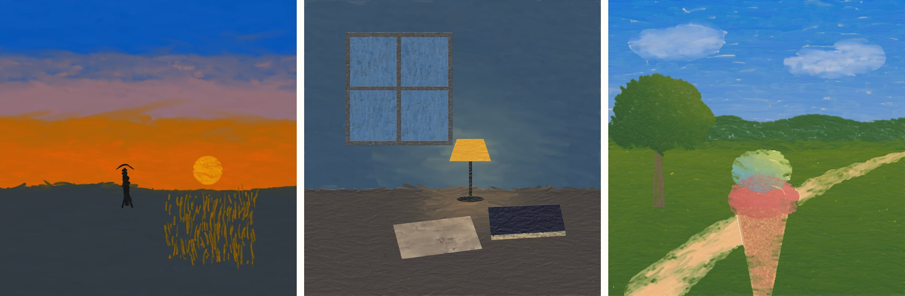
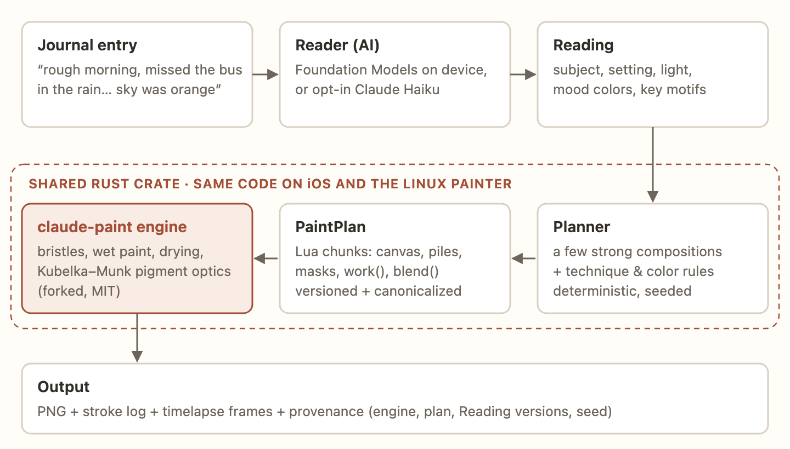
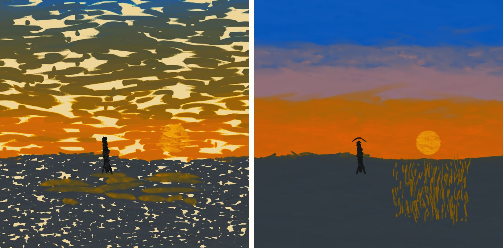
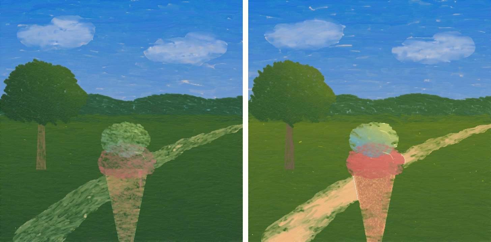
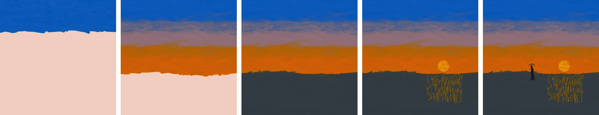
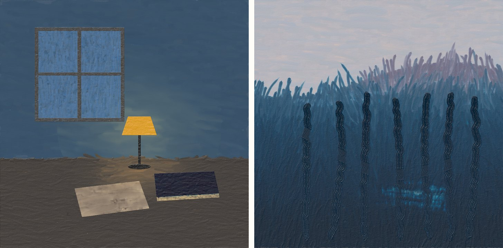
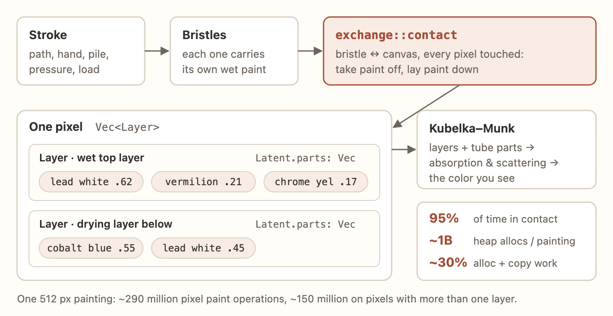
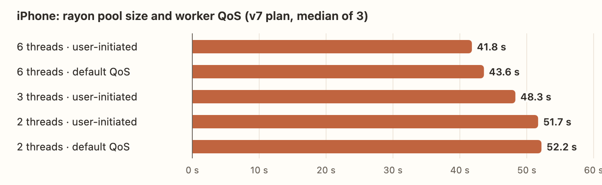
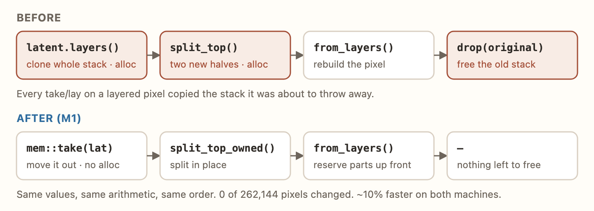
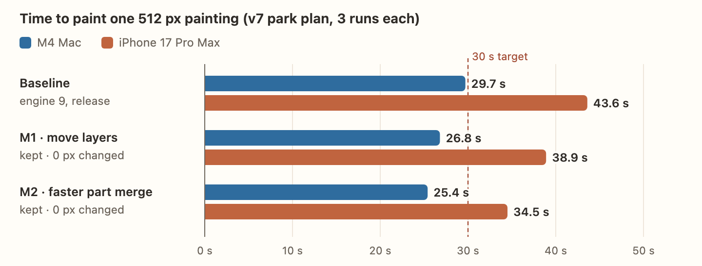

I've been building an iOS journal where every day you write becomes a small oil painting. Each month's days get woven into a bigger "chapter" painting, and on your one-year anniversary the twelve chapters become one large painting of your year. That's the product pitch. This post is about the part I've spent the most time on: the paint engine underneath it, and what it took to get a physical oil-paint simulator running on an iPhone at a speed you'd actually want to sit and watch.
Short version: the engine was already great, the hard parts were somewhere else, and the biggest "performance bug" I found wasn't in the engine at all.
Why simulate paint at all?
The obvious way to turn text into a picture in 2026 is an image-generation model. I didn't want that, for three reasons:
- The look. Generated "oil painting style" images look like a filter. I wanted paint that actually behaves like paint: bristle marks, wet colors dragging into each other, thick passages and thin glazes.
- The process. A real painting has a history. If the engine paints stroke by stroke, the timelapse of your day being painted comes for free, and it turns out that's the best part of the app.
- Determinism. Same plan + same seed = same painting. That makes it testable, which matters a lot later in this post.
So I built on claude-paint, an MIT-licensed physical oil-paint simulator in Rust by aliceisjustplaying. I want to be clear about credit here: the physics is not mine. Simulated bristles carry wet paint across a primed linen canvas, paint levels and dries on a clock, and layers combine with Kubelka–Munk optics, the same absorption-and-scattering model real pigment mixing follows. You don't pick an RGB color. You knife a pile together from named historical tubes (lead white, vermilion, Prussian blue, raw umber…) and paint with that.
My work is everything around it: the planner that turns a journal entry into a painting plan, the iOS build, and a fork of the engine tuned for the phone.
The pipeline

An AI model (Apple's on-device Foundation Models, or Claude Haiku if the user opts in) reads the entry and produces a small structured Reading: subject, setting, light, mood colors, key motifs. From there everything is deterministic code. A planner picks a composition and writes a PaintPlan, which is a Lua script the engine's easel replays:
sky = horizon:above()
-- sky in three bands with soft overlaps, so blue never mixes into orange
high = sky * above(function(x) return 260 end):soften(80)
blue = pile{{"cobalt blue", 1}, {"lead white", 2.5}}
amber = pile{{"chrome yellow", 1}, {"vermilion", 0.7}, {"lead white", 1.2}}
work(high, {hand="broad", pile=blue, angle=0.05, coverage=2, fill=true})
work(low, {hand="broad", pile=amber, angle=0.03, coverage=2.2, fill=true})
blend(sky, {angle=0})The planner and the engine live in one Rust crate compiled for both iOS and a Linux "painter" container on Cloudflare. One implementation means the phone and server can't drift apart, and a parity test checks that the same Reading and seed produce the same plan on both.
The first thing that surprised me: easel run plan.lua --out painting.png just works headlessly. No agent in the loop, no MCP. And --frames-every gives timelapse frames for free.
Lesson 1: the plan matters more than the engine
My test entry was: "rough morning, missed the bus in the rain. lunch w/ sam fixed it tho. long walk home, sky was orange". Here's my first naive plan next to the second one:

The left one looks broken, but the engine is doing exactly what real paint does. Blue dragged through wet orange makes olive mud. Sparse strokes leave bare canvas. Both are planning mistakes. The fix was painter technique encoded as rules: never mix complementaries in one pass, paint the sky as separate bands with soft-masked overlaps, fill body passes, only blend where you want wet-on-wet.
That turned into a color rulebook for the planner, mapped to the tubes the engine actually has. There are no cadmiums or phthalos in a historical tube box, so "bright greens from a cool blue and a cool yellow" becomes Prussian blue + chrome yellow, and "don't darken with black" becomes raw umber + cobalt instead of bone black.
Some rules only came from painting things wrong. My favorite:

The cone was painted on top of wet grass, so the bristles dragged green into it, exactly like a real brush would. The rule now: reserve space. Foreground objects are subtracted from background passes and painted on clean canvas.
Watching it paint is the feature

Early on I had a target of 5–7 seconds per painting. Then I watched a timelapse and changed my mind. Seeing your day get painted, layer by layer, is the moment the app is about. So the target became about 30 seconds, streamed live, and "make it faster" turned into "make the phone as fast as the Mac, and don't touch the quality."
Lesson 2: quality means "does it say what I wrote"
Before optimizing anything I needed to define what "no quality loss" means, because some speedups (fewer bristles, smaller canvas) do change the picture. My first instinct was aesthetic: is it pretty? That's the wrong question for a journal. A painting is good if it translates the entry.

I tried an abstract-emotion direction for a "failed an exam" entry (right) and went back to literal: paint the day's strongest scene, and let light, color and weather carry the feeling. You should be able to look at the painting and know which day it was.
So the quality gate became:
- A frozen checklist per test entry ("orange evening sky", "wet street", "a walking figure"), written before any candidate is judged.
- A matching test: one painting, four entries, which one is it?
- A blinded vision-model screen with a fixed model, prompt and image size, and humans adjudicating anything it flags.
And every change is classified first. Exact changes (compiler flags, memory fixes, loop rewrites) must not change the picture: every pixel within 2/255 of the reference, using the engine's own comparison script. Approximate changes go through the checklist. Everything below turned out to be exact.
Getting it on the phone
The iOS port was less dramatic than I expected. I built the engine unmodified as a static library, added one C entry point (easel_run_c), and called it from a throwaway SwiftUI bench app on an iPhone 17 Pro Max. First numbers: 2.9 s and 14 s at 512 px, the same as my M4 Mac. Peak memory around 250 MB. Thermals nominal.
Too good to be true, and it was. My test plans were missing a header that tells the easel which engine version to run:
--@ engine 9
--@ knife-skim
--@ palette-carried-paint
--@ glaze-film
--@ liquid-film-levels
-- …Without it, the easel falls back to legacy mode with fewer physics features. With engine 9 (knife skim, carried palette paint, liquid film levels and more), a 512 px painting took 27.5 s on the Mac, twice as long. Every number from here on is engine 9. Lesson: before you benchmark, check that you're benchmarking the thing you'll ship.
Where the time goes
The first profile (macOS sample, then Instruments on the phone) was clear:

95% of engine time is in one function, exchange::contact: a bristle touching a pixel, taking paint off and laying paint down. Each pixel is a stack of paint layers (Vec<Layer>), and each layer's pigment is a list of tube parts (2–9 of them). A single 512 px painting does about 290 million pixel paint operations, and adds up to roughly a billion heap allocations. About 30% of the time was malloc, free, memmove and clones.
The other number: the engine averaged about 1.35 of 10 cores on the Mac. There is rayon parallelism for pixel ops and non-overlapping strokes, but broad overlapping strokes (a sky, a field) run serially.
What didn't work
I'm putting these first because they were the most educational.
LTO and one codegen unit: slower
[profile.phone]
inherits = "release"
incremental = false
codegen-units = 1
lto = "fat"The standard "free speed" recipe. Result: byte-identical output and 2.7–4.2% slower. The time is in a handful of hot functions the normal release build already optimizes inside their own module, so cross-crate inlining had nothing to add, and the different code layout cost a little. Rejected, and logged as rejected.
SmallVec for tube parts: much slower
"A billion allocations? Inline the small vectors!" I swapped Latent::parts to a SmallVec<[(usize, f32); 10]>. Exact output, and the Mac run went from 29.5 s to 38.1 s. Each latent grew from ~240 to ~384 bytes, and the engine copies latents constantly. Bigger copies cost more than the allocations they saved. Allocation counts are a symptom; the real question is how much memory you move.
The phone mystery: 76 seconds for an ice cream cone
Most of each painting ran at Mac speed on the phone, but some chunks were 5–20× slower. The cone took 76 s against 3.6 s on the Mac. Clouds took 110 s. One run got killed by iOS after more than 15 minutes. I had a list of suspects: efficiency cores, thermal throttling, memory pressure, some iOS-only code path.
It was none of them. iOS suspends every thread of an app that leaves the screen. Long benchmarks plus a phone on the desk meant the screen locked or I switched apps, and the painting just froze. My own thread sampler, which does no painting, stopped too, and that gave it away. With the app kept on screen (isIdleTimerDisabled during a paint), no chunk was more than 1.6× slower than on the Mac, and the output was byte-identical to the Mac's: 0 of 262,144 pixels different.
Two real findings came out of the instrumentation:
- The phone is about 1.45× slower than the M4, evenly, on every chunk. No phone-specific fault left.
- Rayon's workers ran at
QOS_CLASS_DEFAULT. Darwin threads don't inherit the app's user-initiated QoS. I added two env knobs to the C entry point,EASEL_THREADSandEASEL_QOS, and swept them:

Keep all six threads, set user-initiated QoS, move on. It isn't the fix, just not leaving free performance on the table.
What did work: stop copying paint
M1: move the pixel's layers instead of cloning them

When a bristle takes paint from a layered pixel, the engine splits the pixel's stack into "below" and "top" and rebuilds the pixel from the halves. It cloned the whole stack first, then dropped the original. The fix is mostly one word:
// before
let (mut below, top) = (*self.lat.add(i)).split_top(vol, hide, skim, drain);
// after: the pixel is rewritten from the halves, so move it, don't copy it
let (mut below, top) = std::mem::take(&mut *self.lat.add(i))
.split_top_owned(vol, hide, skim, drain);Plus a consuming into_layers that reuses the layer vector in place, and from_layers reserving room for tube parts up front. Same values, same arithmetic, same order. About 10% faster on both machines, zero pixels changed.
M2: skip searches that can't match
Next up was Latent::blend_parts, ~21% of self time on the Mac. When paint mixes into a pixel, add_parts searched the pixel's tube list once per incoming part. Now a 64-bit mask records which tubes the pixel has, so a search that can't match is skipped. When the pixel names no tube twice, a match at the same index is the only possible one. Repeated tubes and indices ≥ 64 fall back to the old search. A property test checks it bit for bit against the old code on 20,000 random part lists, repeats and large indices included.

Mac: 29.7 → 25.4 s. iPhone: 43.6 → 34.5 s. Both changes exact, byte-identical on both devices.
Where it stands
The phone is ~4.5 s off the 30 s target. Since it runs this engine an even 1.45× slower than the Mac, getting there means a Mac time of about 21 s, which means more of the same: the rest of the paint-layer memory churn, tighter inner loops in exchange/add/take, and wider parallelism (only about two cores are busy, and the phone's efficiency cores clearly have room).
Things I'm explicitly not doing: a GPU/Metal port (mutable layered paint state plus deterministic replay makes it high risk for unclear gain), a lighter "lookalike" engine, or approximate levers like fewer bristles. The 30 s is meant to be watched.
After that comes the fun part: living paintings. The engine paints once, and the app animates a few eligible paintings cheaply at 60 fps. Rain streaks pre-painted by the engine at build time and clipped to a window's glass, or a sky that drifts a few pixels inside a fixed, feathered region. No cutouts, no moving people, and the first frame is exactly the still.
Takeaways
- Measure the thing you ship. A missing header made my first benchmarks 2× too optimistic.
- Your platform can be the bug. A 20× "slowdown" was iOS suspending the app. Sample something that does no work, and you'll see the stall for what it is.
- Classify changes before you make them. "Exact, must be byte-identical" vs "approximate, must pass the checklist" kept every speedup honest.
- Log the failures. LTO and SmallVec both "should" have helped. Both made it slower, and the ledger says why.
- Cloning something you're about to drop is the most Rust perf bug there is.
mem::takeis your friend. - In a simulation, the input is the art. Most of the quality came from the planner, not the physics.
The paint engine is claude-paint by aliceisjustplaying (MIT; its third-party notices cover the spectral.js port and CC BY 4.0 pigment data). My fork adds the iOS static library and the performance changes above. Design decisions were argued out with Claude and Codex as sparring partners, and every number here comes from the project's benchmark ledger.